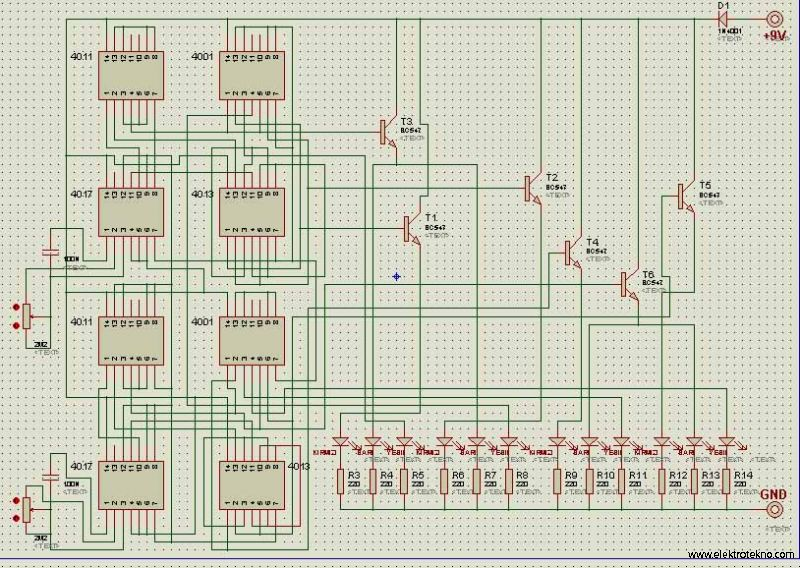
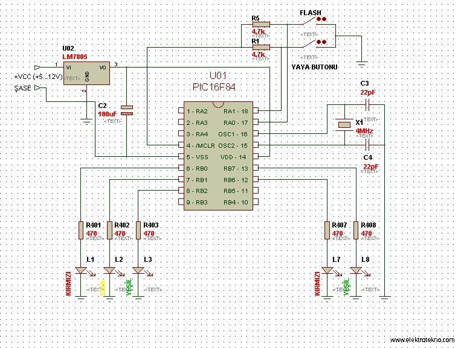

· EEM211
EEM211 Sayısal Mantık Tasarımı: Trafik Işığı Devre Şemaları (CMOS Entegreli ve PIC16F84'lü, elektrotekno.com)
EEM211 – Sayısal Mantık Tasarımı · 01.12.2007 · 16.10.2026
Bu yazı, EEM211 Sayısal Mantık Tasarımı dersinin klasöründe "TRAFİK IŞIĞI" adlı bir dönem projesi klasöründe bulunan iki devre şemasını aktarıyor. Şemalar Proteus ile çizilmiş ve www.elektrotekno.com sitesinden alınmış (şemaların köşesinde sitenin adresi yazıyor). Aynı klasörde bu projeye ait Proteus çizim (ISIS) ve baskı devre (ARES) dosyaları da var; onlar indirme dosyasına konmadı. İki şema yazının sonunda ZIP olarak indirilebilir.
Bu içerik üçüncü taraf bir kaynağa aittir; arşiv ve nostalji amacıyla kaynak belirtilerek paylaşılmıştır. Hak sahibinin talebi hâlinde kaldırılır.
CMOS entegreli trafik ışığı
Birinci şema yalnızca CMOS lojik entegreleriyle kurulmuş bir trafik ışığı: iki adet 4011 (dörtlü 2 girişli NAND), iki adet 4001 (dörtlü 2 girişli NOR), iki adet 4017 (onlu sayıcı/kod çözücü) ve iki adet 4013 (ikili D flip-flop). Saat sinyalleri, 4017'lerin yanındaki 2,2 MΩ'luk ayarlı dirençler ve 100 nF kondansatörlerle kurulan RC osilatörlerden geliyor; süreler potansiyometrelerle ayarlanabiliyor. Lojik çıkışlar altı BC547 transistör üzerinden kırmızı, sarı ve yeşil LED gruplarını sürüyor; her LED'in 220 Ω'luk seri direnci var. Devre +9 V'tan, bir 1N4001 diyot üzerinden besleniyor.

PIC16F84'lü trafik ışığı
İkinci şemada ışıklar bir PIC16F84 mikrodenetleyicisiyle yönetiliyor:
- Besleme: +5…12 V giriş, LM7805 regülatör ve 100 µF kondansatör ile 5 V.
- Saat: 4 MHz kristal (X1) ve iki adet 22 pF kondansatör (OSC1, OSC2).
- Girişler: RA0 ve RA1'e 4,7 kΩ çekme dirençli iki buton, FLASH (flaşör modu) ve YAYA BUTONU.
- Çıkışlar: RB0–RB2 araç ışıkları (kırmızı, sarı, yeşil), RB6–RB7 yaya ışıkları (kırmızı, yeşil); her LED 470 Ω dirençle bağlı.
